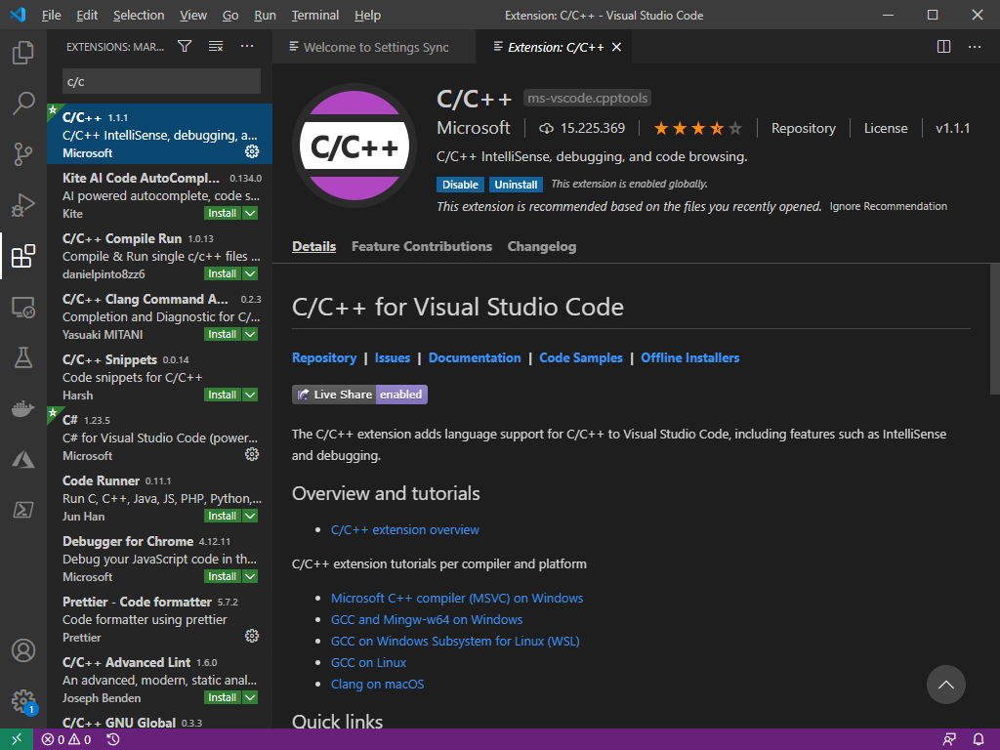
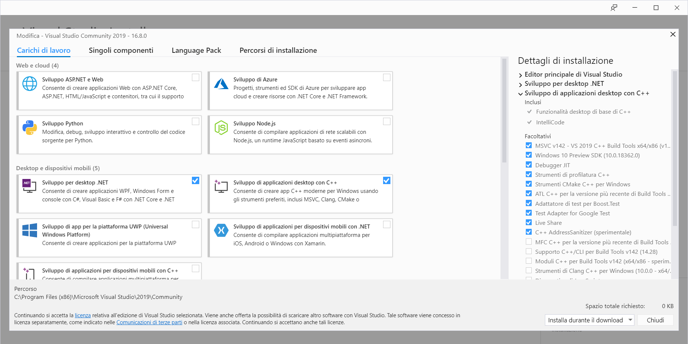
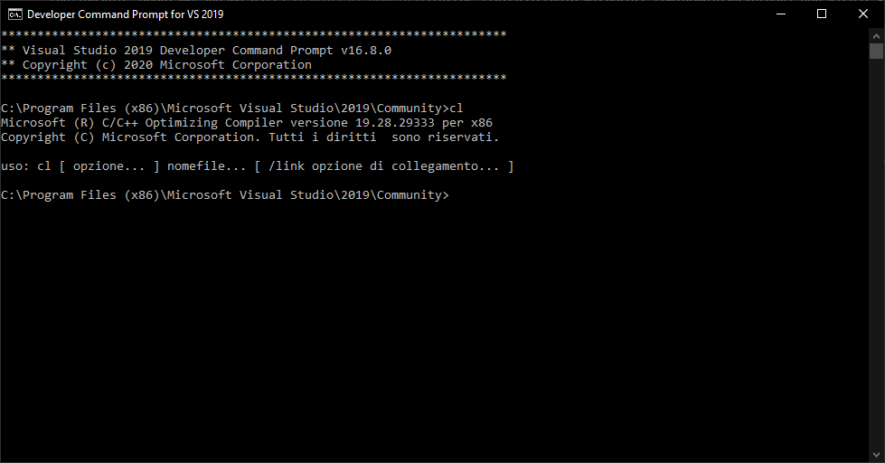
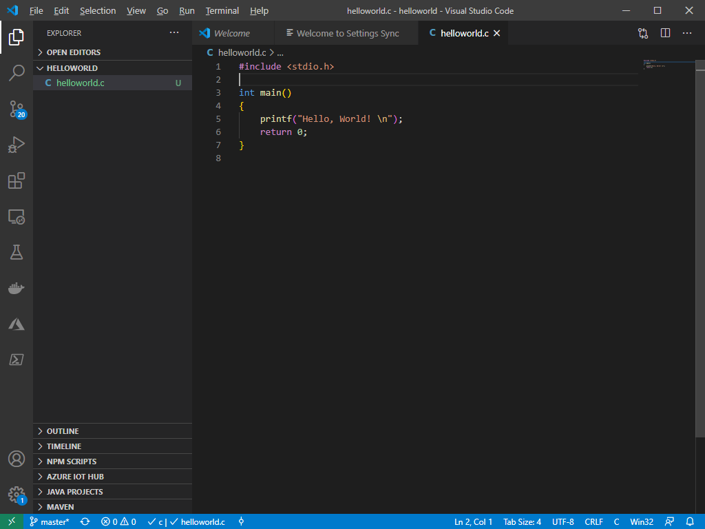
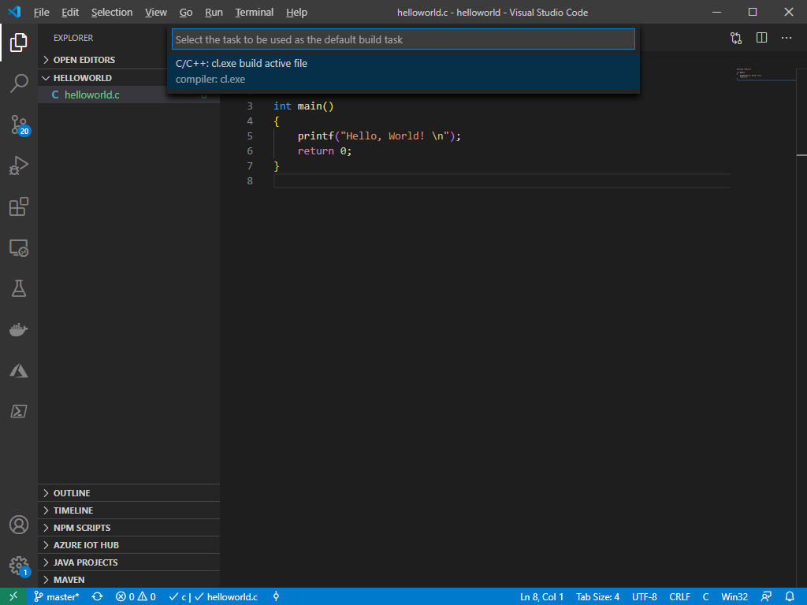
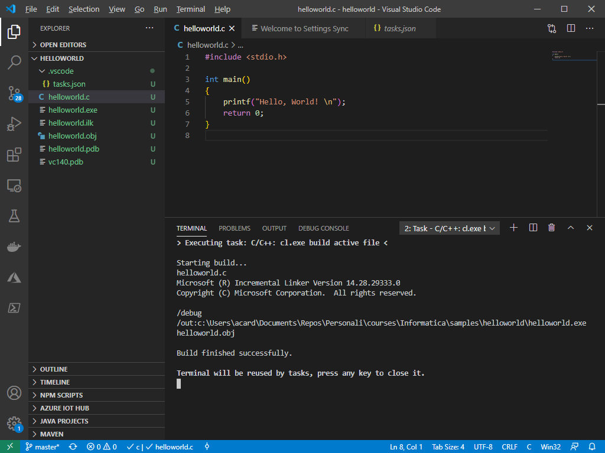

Visual Studio Code
Installazione e configurazione di C/C++¶
Una volta installato il software Visual Studio Code (VS Code), reperibile al seguente link, dovremo configurarlo per poter lanciare il compilatore nei diversi linguaggi che utilizzeremo durante le esercitazioni.
Installazione del supporto¶
- Per prima cosa, installiamo l'estensione C/C++. Per farlo, selezioniamo da VS Code il menu "Estensioni", oppure premiamo la combinazione
Ctrl + Maiusc + X, e quindi scriviamoc/c++nella barra di ricerca. Selezioniamo quella ufficiale di Microsoft ed installiamola seguendo la procedura guidata.

-
Useremo il compilatore ufficiale fornito da Microsoft per Visual Studio. Per scaricarlo, usiamo questo link. In alternativa, qualora questo link non fosse funzionante, dobbiamo andare dalla pagina di download per Visual Studio, e cercare nella pagina Strumenti per Visual Studio > Build Tools for Visual Studio.
-
Installiamo il programma scaricato al passo precedente. Una volta terminata l'installazione, eseguiamo il programma Visual Studio Installer. Si aprirà una schermata come la seguente:

Dal menu che si apre, selezioniamo l'opzione Sviluppo di applicazioni desktop con C++ mediante il segno di spunta.
Nota
Qualora non dovesse aprirsi la schermata precedente, ma una schermata in cui sono mostrate tutte le possibili installazioni di Visual Studio, selezioniamo l'opzione Modifica.
Verifica dell'installazione¶
Apriamo la Developer Command Prompt for VS, cercandola dal menu Start, come mostrato in figura.

Verifichiamo che il compilatore sia installato digitando cl da riga di comando e premendo Invio.

Creazione di un progetto di esempio¶
Creiamo ora un progetto di esempio. Navighiamo in una cartella a nostra scelta (ad esempio C:\progetti\informatica) digitando, da shell, il seguente comando:
cd C:/progetti/informatica
A questo punto, creiamo una cartella helloworld, spostiamoci all'interno di essa, e lanciamo Visual Studio Code:
mkdir helloworld
cd helloworld
code .
Si aprirà una nuova schermata di Visual Studio Code. Creiamo un file chiamato helloworld.c e scriviamo il seguente codice.
#include <stdio.h>
int main()
{
printf("Hello, World! \n");
return 0;
}

Compilazione del progetto¶
Per compilare il progetto, scegliamo dal menu principale l'opzione Terminal > Configure Default Build Task (l'ultima opzione). Apparirà un menù a scorrimento; scegliamo l'opzione cl.exe build active file, come mostrato in figura.

A questo punto, sarà creato un file tasks.json all'interno di una cartella .vscode. Possiamo configurarlo come meglio ci aggrada; per i nostri scopi, però, potremo lasciare la configurazione di default.
Torniamo al nostro file helloworld.c, e compiliamo premendo la combinaziont Ctrl + Maiusc + B. Se escono a schermo i messaggi mostrati nella seguente figura, avremo completato correttamente la configurazione.

Attenzione!
Potremmo ricevere un errore che ci comunica che non è stato possibile trovare cl.exe. In questo caso, basta riavviare Visual Studio Code dal prompt degli sviluppatori che abbiamo aperto in precedenza, recandoci all'interno della cartella di progetto e scrivendo l'istruzione code .